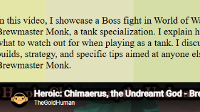

Gaming / Commentary
World of Warcraft: Commentary Video
In this video, I showcase a boss fight in World of Warcraft on my Brewmaster Monk. I explain how the fight works, what to watch out for while playing as a tank, and discuss gear, talent builds, strategy, and tanking tips.